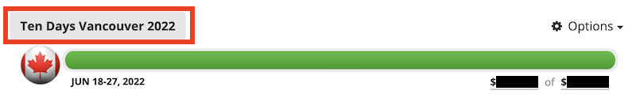
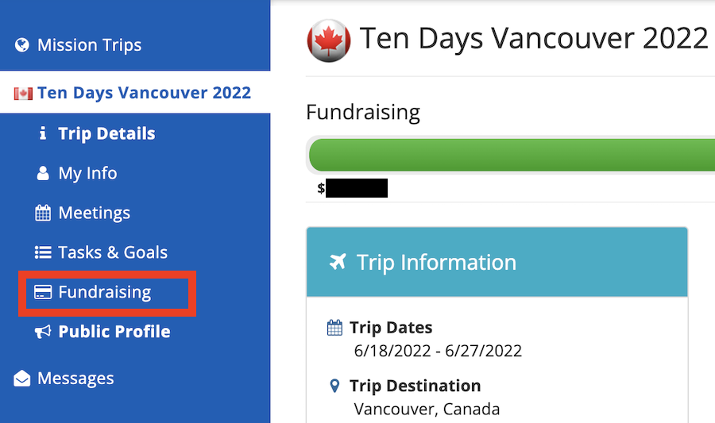
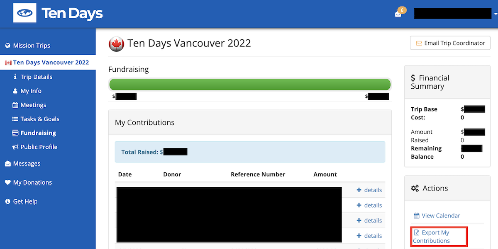

MPD email parser
How to use this tool:
- Login to your fundraising page (app.managedmissions.com/)
- Click on the mission:

- On the mission page, click the "Fundraising" tab:

- On the fundraising tab, click the "Export My Contributions" option:

- This will let you download a .csv file
- Copy the contents of that file into the text field below
- Click "Go"